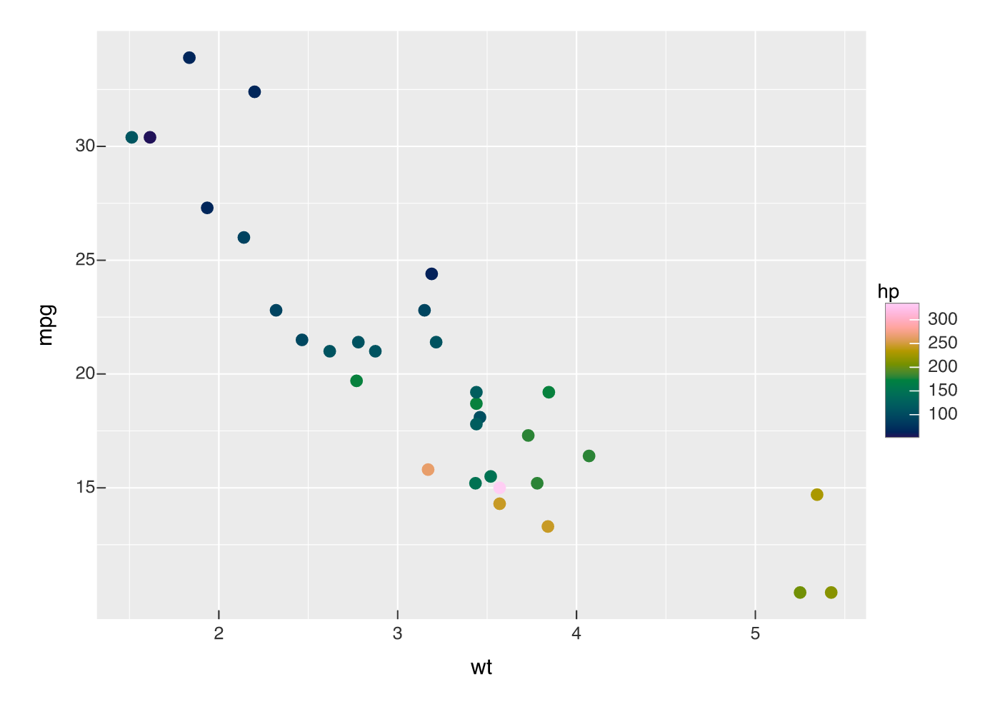
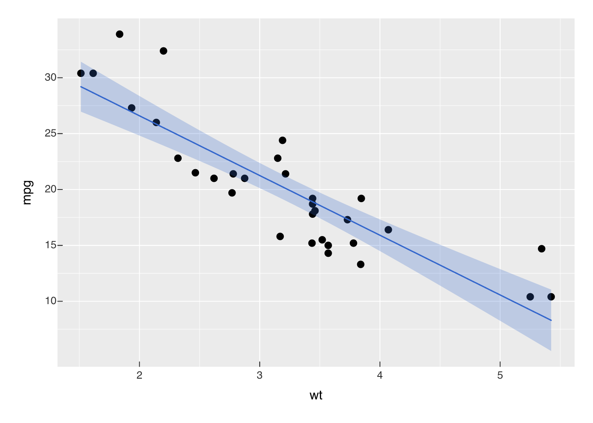
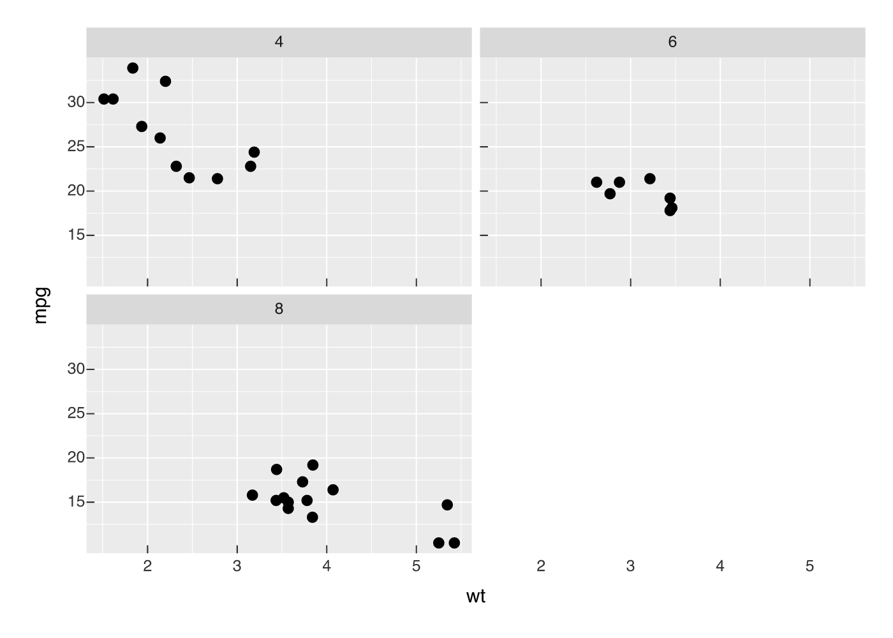
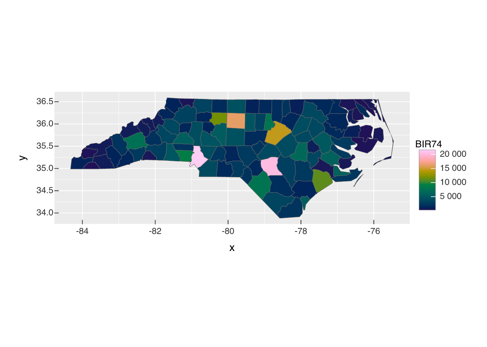
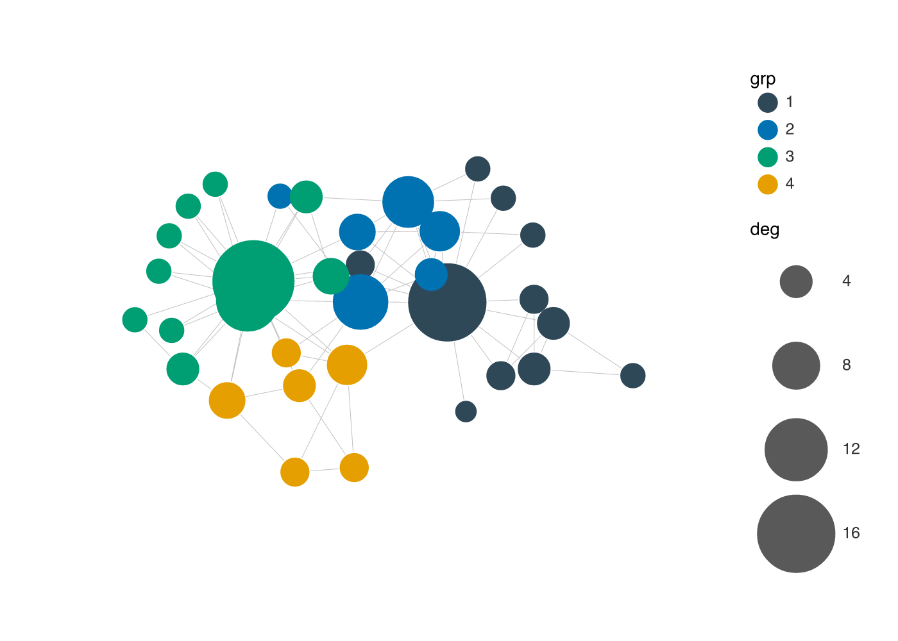

vellumplot is a declarative, pipe-first grammar of graphics built on the vellum graphics backend. You describe a plot as an inspectable, serializable spec; nothing is drawn until the spec is compiled into a vellum scene and rendered.
It is a real compiler — spec → resolve encodings → train scales → measure layout → compile guides → compile marks → vellum scene — not a thin wrapper around the drawing primitives.
Installation
# install.packages("pak")
pak::pak("r-vellum/vellumplot")vellumplot needs the vellum backend, which compiles a Rust crate, so you also need a Rust toolchain (cargo/rustc); pak pulls vellum in automatically.
Usage
Building a plot returns a spec; printing it draws into the Plots pane (and embeds in a knitr/Quarto chunk), like ggplot2. Use render_plot() to write a file.
library(vellumplot)
# a scatter with a continuous colour legend
vplot(mtcars) |>
mark_point(x = wt, y = mpg, color = hp) |>
scale_color_continuous()
Layer marks on a single panel; scales train across every layer:
vplot(mtcars) |>
mark_point(x = wt, y = mpg) |>
mark_smooth(x = wt, y = mpg)
Facet into a grid of panels (facet_wrap() / facet_grid()), with shared or free scales:
vplot(mtcars) |>
mark_point(x = wt, y = mpg) |>
facet_wrap(~cyl)
Draw spatial data: mark_sf() renders an sf geometry column and coord_sf() reprojects and locks the map aspect ratio:
nc <- sf::st_read(system.file("shape/nc.shp", package = "sf"), quiet = TRUE)
vplot(nc) |>
mark_sf(fill = BIR74) |>
coord_sf()
Draw a network: vgraph() lays out an igraph graph (stress majorization by default), then mark_edges() / mark_nodes() draw it — aspect-locked, no axes, edges under nodes:
g <- igraph::make_graph("Zachary")
g <- igraph::set_vertex_attr(
g,
"grp",
value = as.factor(igraph::cluster_louvain(g)$membership)
)
g <- igraph::set_vertex_attr(g, "deg", value = igraph::degree(g))
vgraph(g, layout = "stress") |>
mark_edges(alpha = 0.4) |>
mark_nodes(size = deg, fill = grp) |>
scale_size(range = c(2, 8))
The spec is just data — summary() shows its structure without drawing:
summary(vplot(mtcars) |> mark_point(x = wt, y = mpg, color = hp))
#> <PlotSpec> 32x11 (11 columns), page 6x4 in
#>
#> ── layers
#> • mark_point(x = wt, y = mpg, color = hp)Write to a file with render_plot() (the format follows the extension):
p <- vplot(mtcars) |> mark_point(x = wt, y = mpg)
render_plot(p, "cars.png")What’s included
- Marks:
mark_point(),mark_line(),mark_step(),mark_rule(),mark_bar()(explicit heights, or row counts per category),mark_area()/mark_ribbon(), intervals (mark_errorbar(),mark_linerange(),mark_segment()),mark_boxplot(), tiles/heatmaps (mark_tile(),mark_raster()), 2-D binning (mark_bin2d(),mark_hex()), 2-D density contours (mark_contour(),mark_contour_filled()), text (mark_text(),mark_label()), and pie/donut shortcuts (mark_pie(),mark_donut()). - Spatial:
mark_sf()draws ansfgeometry column as a map layer, withcoord_sf()to reproject and lock the aspect ratio. - Network:
vgraph()starts a node-link diagram from anigraphgraph (stress layout by default, viagraphlayouts), withmark_edges(),mark_nodes(),mark_node_text(), andscale_edge_width(). - Encodings (tidy-eval):
x,y,color/fill,size,shape,alpha. - Position scales (
scale_x_continuous(),scale_y_continuous(); linear andlog10) with auto-trained, expanded domains; discrete band scales (scale_x_discrete(),scale_y_discrete()) for categorical axes. - Colour scales (
scale_color_continuous()/scale_fill_continuous(),scale_color_discrete()/scale_fill_discrete(),_gradient(),_binned(),_manual()),scale_shape(), and a trainedscale_size(), with stacked legends. - Trained axes, a panel with gridlines, and layering on one panel.
- Faceting (
facet_wrap(),facet_grid()) with shared or free scales, via theresolve_scale()lattice. - Statistical marks:
mark_histogram(),mark_density(),mark_summary(),mark_smooth()(withafter_stat()). - Coordinate systems:
coord_cartesian(),coord_flip(),coord_fixed()/coord_equal(),coord_trans()(nonlinear display remap),coord_polar()(pie / coxcomb / radar), andcoord_sf(). - Position adjustments: stack / dodge / fill bars, jittered points.
- Per-mark
blend =modes (CSSmix-blend-mode:"multiply","screen", …). -
mark_datashade()for million-point density rasters. - Annotations:
annotate(),labs(), andmd()markdown titles. - Themes (
theme_gray()default,theme_minimal(),theme_bw(),theme_classic(),theme_void(),theme_cyberpunk(),theme()/set_theme()) and multi-plot composition (hconcat(),vconcat(),concat(),wrap_plots(),inset(),repeat_()). - Layer effects (
glow(),outline(),shadow()) and gradient fills (linear_gradient(),radial_gradient()). - Hand-drawn rendering:
sketch()gives any geometry mark a wobbly, hachure- filled Rough.js look (asketch =argument on marks, anelement_line()/element_rect()sketch =slot, or the plot-widetheme_sketch()one-liner). Generated natively in the engine, so it is exact and works across PNG / SVG / PDF.
The vellum ecosystem
vellumplot is the grammar layer of a small ecosystem of packages that share the vellum scene model:
- vellum — the parchment: the low-level graphics backend (Rust scene graph, PNG/SVG/PDF renderer).
- vellumplot — the pen: this package.
-
vellumwidget — the annotation: turns a vellumplot plot (or a raw vellum scene) into a client-side interactive HTML widget via
as_widget(). - vellumverse — installs and loads the whole ecosystem in one step.